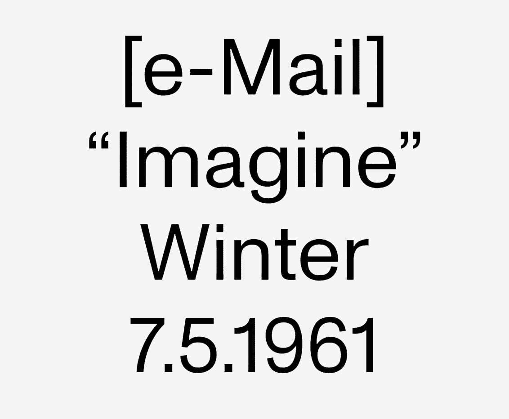

The studio, ‘A to the K’, reflects upon the opportunities provided through the application and design of computational typography. This field is relatively new with Variable Typography being introduced in 2016 through an update to the OpenType specification allowing designers to create a single file storing a range of design instances. The technology has accordingly been used to allow designers greater freedom and flexibility when choosing parameters such as weights and italics, however through the exploration and experimentation taken throughout the studio, the further possibilities of this technology are brought to attention. With companies like Google and Adobe providing the infrastructure and practitioners such as ABC Dinamo leading a new wave of typographic exploration the field is set to continue its growth and application into the future.
* ABC Dinamo, Monument Grotesk designed by Kasper-Florio *
Throughout the studio my understanding of Computational Typography has grown, and with it my understanding on the opportunities it holds. My own experiments while developing Champagne Socialist highlighted the true functionality of variable typography, especially through digital applications. As has been explored by other practitioners in the field, the ability to change the weight, width and italics of a font dependent on screen size, time zone and any other number of variables allows the designer to develop variants which maximise the final outcome to suit the user’s environment. In the sense of web design, this technology allows for a truly dynamic experience. However, moving even further beyond these standard parameters is where I see the most exciting and interesting future for this technology. An example of this would be my own Champagne Socialist, which was an experiment in the application of type. Exploring the possibility to use a single typeface for all applications, from a utilitarian monospaced sans-serif to an elegant and expressive serif, and everything in-between.
The studio’s objective in exploring this emerging technology led me to discover other interesting projects that, when combined with variable typography, can create immersive and expressive experiences. Machine Learning, specifically ml5.js, was one of these technologies which I explored in parallel with the typography. The library aims to make machine learning approachable for a broad audience including artists, creative coders and students. The Type Sampler developed for the typeface provided the perfect playground to experiment with these two technologies, allowing me to create an interactive and playful showcase of the letterforms with the use of ml5’s facial recognition API. The outcome highlights the opportunities for designers when incorporating new and developing technologies into the design process. When working alongside this technology, outcomes arise which wouldn’t have been thought of, or been possible without this exercise in exploration. Continuing to play with these technologies will remain a key aspect of my creative process, working alongside the work to further the concepts and outcomes.